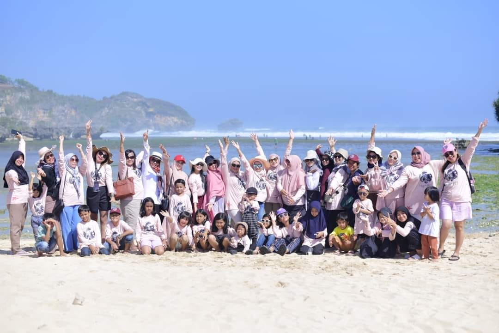

Mitsubishi Xpander Indonesia
Komunitas Mobil Mitsubishi Xpander
Satu hati, satu rasa, satu aspal "MIXI We Are Family". Menjelajah nusantara dengan kebersamaan dan semangat Keluarga.

Tentang MIXI
MIXI (Mitsubishi Xpander Indonesia) adalah sebuah wadah prestisius bagi para pemilik dan antusias kendaraan Mitsubishi Xpander di seluruh tanah air. Secara hukum, komunitas ini telah mengukuhkan eksistensinya melalui akta pendirian perkumpulan yang sah dan legal, menjadikannya organisasi otomotif yang akuntabel dan terpercaya. Visi utama MIXI melampaui sekadar hobi otomotif; kami berkomitmen memupuk tali silaturahmi tanpa batas serta mempererat semangat persaudaraan lintas sektoral di antara para anggotanya. Melalui filosofi "MIXI We Are Family", secara konsisten menyelenggarakan berbagai program inovatif dan kegiatan positif yang dirancang khusus untuk melibatkan seluruh elemen keluarga. Mulai dari kegiatan touring edukatif, aksi sosial kemanusiaan, hingga pertemuan rutin yang edukatif, setiap agenda MIXI bertujuan untuk memberikan nilai tambah bagi member sekaligus membangun dampak nyata yang bermanfaat bagi masyarakat luas.

Dewan Penasehat MIXI Nasional
Para tokoh dan sesepuh yang memberikan arahan, bimbingan, serta nasihat untuk kemajuan dan keberkahan komunitas MIXI.
Penasehat 1
Penasehat 2
Penasehat 3
Penasehat 4
Pengurus Nasional 2024-2027
Kepengurusan periode 2024-2027 | Semangat Kolaborasi untuk kemajuan komunitas Xpander Indonesia. Seluruh pengurus berkomitmen menjalankan amanah dengan penuh dedikasi dan integritas.
Pimpinan Utama
Divisi Lengkap
Koordinator Wilayah (Korwil)
Kegiatan MIXI
Berbagai kegiatan rutin, tahunan, dan insidental yang kami selenggarakan untuk mempererat silaturahmi dan mengembangkan potensi anggota.

Touring
Jelajahi keindahan Indonesia dengan konvoi Xpander bersama anggota dari berbagai chapter.

Kopdar
Silaturahmi rutin yang diisi dengan diskusi modifikasi, otomotif, dan pengalaman berkendara.

Bakti Sosial
Donasi, pengobatan gratis, dan bedah rumah untuk masyarakat yang membutuhkan.

Coaching Klinik
Pendidikan safety driving dan perawatan kendaraan Xpander yang benar.
Kegiatan Tahunan Unggulan

XPanture
Kegiatan tahunan yang rutin dilaksanakan secara gabungan baik dari beberapa chapter maupun beberapa korwil yang bertujuan mempererat silaturahmi dan persaudaraan antar member mixi lintas chapter dan korwil dengan kegiatan khasnya selain touring, kopdar dan silaturahmi adalah menyisipkan kegiatan adventure baik saat touring dengan medan track yang cukup menantang maupun wisata adventure yang melibatkan adrenalin bagi seluruh peserta.

X-Fac
Merupakan kegiatan Camping/Campervan MIXI dimana acara ini juga dilaksanakan satu tahun sekali yang melibatkan seluruh member mixi lintas chapter maupun lintas korwil dimana kegiatan unik ini lebih mengakrabkan kembali seluruh pesertanya melalui kegiatan di alam bebas.
Event Besar MIXI
Event tahunan skala nasional yang menjadi agenda wajib seluruh anggota MIXI se-Indonesia.

Anniversary Chapter
Perayaan hari jadi chapter dengan berbagai acara seru dan kebersamaan.

Touring Gabungan Nasional
Konvoi akbar lintas provinsi yang diikuti ratusan peserta dari seluruh chapter.

Rakernas
Rapat Kerja Nasional untuk menentukan program dan visi komunitas ke depan.

Jambore Nasional
Puncak akbar seluruh anggota MIXI yang dikemas dengan games, atraksi, dan kebersamaan.
Berita Terbaru
Informasi terkini seputar kegiatan dan event MIXI dari seluruh chapter di Indonesia.

Touring Chapter Ciayumajakuning
15 Maret 2025
Puluhan Member MIXI Ciayumajakuning touring dan kopdar acara meriah diikuti oleh hampir semua member beserta keluarga nya disamping mempererat silaturahmi ajang ini menjadi moment mengakrabkan antar member terutama member yang baru gabung.

Bakti Sosial MIXI Peduli
1 Februari 2025
MIXI Bandung mengadakan aksi sosial berupa pemberian Bantuan Sosial Ramadhan berupa sembako ke Rumah Quran dan Yatim.

Camping Gabungan MIXI
10 Januari 2025
MIXI Chapter Bekasi, Jakarta, Debora, Karawang, SUCI, dan Bandung mengadakan acara camping Gabungan MIXI yang diselenggarakan di Cikole Lembang Bandung.
Chapter MIXI Se-Indonesia
Tersebar di 41 kota dari Sabang sampai Merauke, MIXI hadir sebagai keluarga besar pecinta Xpander.
Bergabung dengan MIXI
Jadilah bagian dari ribuan pengguna Xpander yang solid, maju bersama, dan berprestasi. Komunitas terbuka untuk semua pemilik Mitsubishi Xpander di seluruh Indonesia.

Email: mixipusat@gmail.com | IG: @mixi.indonesia | YT: @MixiNasional | TikTok: @mixi.nasional